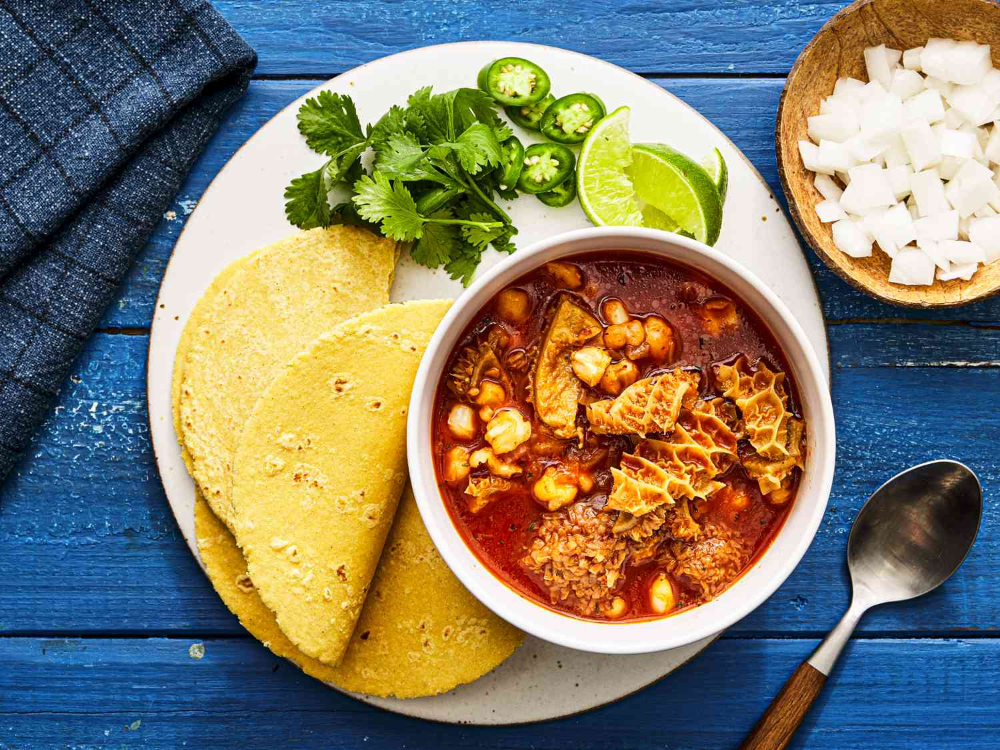

Menudo

Menudo is a spicy tripe stew from Mexico that features tender-chewy pieces of long-simmered tripe in a hearty broth loaded with
hominy and infused with dried red chiles. Toasted, soaked, and blended into the broth, the chiles provide a pungent backdrop to the
assertive texture and flavor of the tripe. Honeycomb tripe, the most geometrically beautiful of all four of a cow's stomachs,
is a nice choice for menudo due to its tenderness and comparatively shorter cooking time.
As an extra precaution to remove overtly gamey flavors, the tripe is scrubbed and parboiled before it is placed in the stew.
Provided that you don't have any minuscule cuts on your fingers, scrubbing the tripe with salt and lime juice is an entertaining activity in itself.
Like removing a stain from an item of clothing, I use a scrubbing motion to work the salt and lime into the hexagonal weave of the tripe.
Split pigs' feet are used in the stew for body and flavor; prior to adding the chiles, the broth of tripe and trotters will be a beautiful
milky white thanks to ample gelatin that holds rendered fat in a fairly stable emulsion in the broth.
Ingredients
Soup
- 2 pounds (907 g) beef honeycomb tripe
- 2 tablespoons fresh lime juice (from 1 large lime)
- 2 tablespoons (18 g) plus 1 teaspoon (3 g) Diamond Crystal kosher salt,
divided, plus more to taste (for table salt, use half as much by volume or the same weight)
- 1 pork trotter (about 1 pound 5 ounces; 600 g), halved lengthwise
- 1 tablespoon dried oregano, preferably Mexican oregano
- 2 dried bay leaves
- 10 medium cloves garlic (2 1/2 ounces; 70 g total), crushed, divided
- 1 large white onion (12 ounces; 340 g), chopped (about 2 cups), divided
- 1 teaspoon cumin seeds
- 8 medium dried New Mexico chiles (about 1.43 ounces; 40 g total)
- One 29-ounce can white hominy, drained (about 2 1/2 cups)
Serving
- Fresh lime wedges
- Chopped white onion
- Fresh cilantro
- Sliced serrano chiles
- Warmed soft corn tortillas
Steps
- Wash and rinse tripe thoroughly in warm water. Place in a large bowl, then sprinkle with lime juice and 1 tablespoon (9g) salt,
and scrub vigorously. Let soak 30 minutes, then rinse and wash the tripe again in warm water. Drain.
- Cut tripe into 1- to 2-inch pieces. Place tripe and pork trotter in a large stockpot, cover with water by 2 inches, and bring to a boil.
Boil for 5 minutes, then drain and rinse. If necessary, wipe out pot.
- Return tripe and trotter to stockpot. Add 12 cups (2.8L) water, oregano, bay leaves, 6 garlic cloves, and half of the onion (about 1 cup).
Bring to a boil over medium-high heat, skimming surface as needed; then reduce heat to medium-low and partially cover.
Simmer gently until tripe is very tender, 2 to 3 hours.
- Set a large cast iron or stainless-steel skillet over medium heat. Add cumin seeds and toast, tossing often,
until fragrant and slightly darkened, 2 to 3 minutes; remove from skillet and set aside. In same skillet,
toast chiles until pliable and slightly darkened, 30 to 60 seconds per side. Tear chiles open; remove and discard stems and seeds.
Place chiles in a heatproof bowl, then submerge in boiling water. Cover and let soak until softened, about 15 minutes.
- Remove pork trotters and set aside until cool enough to handle; pick off any pieces of meat and return them to pot, discarding bones.
- Drain chiles and place them in a blender with remaining onion, 4 cloves garlic, and toasted cumin. Add 2 cups of simmering broth,
and blend until very smooth, 1 to 2 minutes; to prevent the hot liquid from erupting violently when blending,
make sure to open the vent on the blender lid, hold it covered with a clean kitchen towel, and start the blender at its lowest speed
before increasing to high. Strain chile-broth mixture through a fine mesh sieve and stir it back into the soup, along with the hominy.
Simmer until hominy is tender and flavors have melded, 20 to 30 minutes. Season to taste with additional salt, if desired.
- Serve hot with condiments and tortillas on the side, to be used according to personal taste.
Home